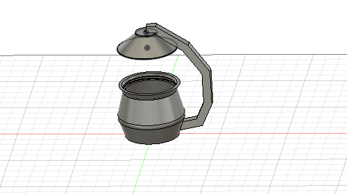

作ったモーターの制御部分をスイッチでもオンオフできるようにします。
新たにスイッチを購入しなくてもM5stackはボタンが3つついているためこれを使用する。
イメージ どこかのボタンを押すと土壌の水分が関係なくオンになり、5秒で止まるようにしたい。
ネットでM5stackのボタンのプログラムを調べる。
調べると M5.BtnA M5.BtnB M5.BtnC というもので3つのボタンがいじれる。
プログラムにも押す 離す 長押し ダブルクリック など様々変更可能だった。
これらのプログラムを動かすためには、M5.update （）というものを書かないと動かないらしい。
実際に書いたのが
Void loop(){
M5.update();
if (M5.BtnB.wasPressed () ) {
degitalWrite(26,HIGH);
delay (5000) ;
}
だが、いま制御しているプログラムに書き込んでも他のプログラムが悪さをしているのかボタンを押しても動かなかった。
新規のプログラムに書き込んでみると 動くが delay(5000) をかいてあっても 5秒で止まることがなかった。
道用先生に相談し、プログラムの内容を変更した。
プログラム内容
#include <WiFi.h>
#include <M5Stack.h>
#include <HTTPClient.h>
//使用環境に応じて変更-------------------------------------------------
const char* ssid = "";//繋げたいネットワーク
const char* password = "";//繋げたいネットワークのパスワード
String host = "https://doyolab.net/appli/iot/add";
String user_key = "";//自分のユーザーkey
String sub_id = "";//端末の名前など識別できるに文字
//-------------------------------------------------------------------
int moist_Port = 35;
unsigned long prev;
void setup() {
Serial.begin(115200);//M5Stackは115200にしないと文字化けする
M5.begin();
M5.Power.begin();
m5.Speaker.write(0);
pinMode(moist_Port, INPUT);
pinMode(26, OUTPUT);
// text print
M5.Lcd.fillScreen(BLACK);
M5.Lcd.setCursor(10, 10);
M5.Lcd.setTextColor(WHITE);
M5.Lcd.setTextSize(1);
M5.Lcd.println("Boot Complete");
WiFi.begin(ssid, password);
Serial.println("WiFi connecting");
while ((!(WiFi.status() == WL_CONNECTED))) {
delay(300);
Serial.print(".");
}
Serial.println("");
Serial.println("WiFi connected");
// 2020/10/1道用追加------------------
prev = 0;
// ----------------------------------
}
void loop() {
// 2020/10/1道用追加------------------
unsigned long curr = millis(); // 現在時刻を取得
if ((curr - prev) >= 60000) { // 前回実行時刻から60秒以上経過していたら
moist_sensor(); // センサーの読み取りとIoTサーバーへの書き込みを実行するmoist_sensor()を呼び出し
prev = curr; // 前回実行時刻を現在時刻で更新
}
// ----------------------------------
M5.update();
if (M5.BtnB.wasPressed () ) {
digitalWrite(26, HIGH);
delay(2000); //2秒水やり
digitalWrite(26, LOW);
// }
// else if (M5.BtnB.wasReleased()) {
// digitalWrite(26,LOW);
}
}
// 2020/10/1道用追加------------------
void moist_sensor() {
int d;
d = analogRead(35);
Serial.println (d);
String svalue = String(d);
String ret = sendData_to_doyolatIoT(svalue);
Serial.println(ret);
M5.Lcd.fillScreen(BLACK);
M5.Lcd.setCursor(10, 10);
M5.Lcd.println(d);
}
// ----------------------------------
String sendData_to_doyolatIoT(String mydata) {
String ret;
if (WiFi.status() == WL_CONNECTED) {
HTTPClient http;
http.begin(host);
http.addHeader("Content - Type", "application / x - www - form - urlencoded");
//必要に応じて変更-----------------------------------------------------
//floatデータを送信する場合
//String params= "user_key="+user_key+"&sub_id="+sub_id+"&float_data="+ mydata;
//intデータを送信する場合
String params = "user_key = " +user_key + "&sub_id = " +sub_id + "&int_data = " + mydata;
//testデータを送信する場合
//String params= "user_key="+user_key+"&sub_id="+sub_id+"&text_data="+ mydata;
//-------------------------------------------------------------------
int httpCode = http.POST(params);
if (httpCode > 0) {
// HTTP レスポンスコードが返ってくる
Serial.printf("[HTTPS] POST... code: % d\n", httpCode);
String payload = http.getString();
ret = payload;
} else {
// コネクションエラーになるとマイナスが返る
// Serial.println("[HTTPS] no connection or no HTTP server.");
ret = "[HTTPS] no connection or no HTTP server.";
}
http.end();
} else {
ret = "No Wifi";
}
return ret;
}
前回のものからより良いものへの改良したデザインを作りたい。
近未来感を出したい。
半自動栽培にしたい。
ユーザーエクスペリエンスを残す。
